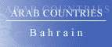

The Country & People of Bahrain
This page contains links to sites in Bahrain and Bahrain related sites.
For Middle East, North Africa, Arab and regional information visit Arab Countries
Hints:
- Use the "FIND" function in the Edit menu of your browser to search the page
- Use translating services in Chrome or Bing Bar in Internet Explorer to view page and/or linked websites in your language
General Info
* Business
* Culture
* Education
* History
* Media
* Organizations
* Travel
* Gateways
* Arab Countries
Bahrain or Bahrein, officially Kingdom of Bahrain, constitutional monarchy (1999 est. pop. 666,400), 266 sq mi (689 sq km), an archipelago in the Persian Gulf between the Qatar Peninsula and Saudi Arabia. The two main islands are Bahrain (the largest) and Al Muharraq, which are linked to each other and Saudi Arabia by causeway. The capital and chief port is Al Manamah. Flat and sandy, with a few low hills, Bahrain has a hot, humid climate. The economy has been based on oil, and oil revenues have financed modernization projects, particularly in health and education. Oil reserves are expected to be exhausted in the near future, however, and other industries such as shipyards and aluminum smelting have been established. Bahrain is an important financial center and the site of a major U.S. navy base. The majority of the population are Muslim Arab Bahrainis, but other Arabs and Iranians, Indians, and other Asians make up over 35% of the inhabitants. About 75% of the population are Shiite Muslims; most of the rest are Sunnis. Arabic is the official language, but English, Farsi, and Urdu are also spoken.
History
Anciently known as Dilmun, the island was known to the Greeks as Tylos. Ruled by Portugal (16th cent.) and Persia (intermittently from 1603, and long claimed by Iran), Bahrain became a sheikhdom in 1783 and a British-protected state in 1861. Independence was declared in 1971. A constitution, adopted in 1973, limited the sheikh's powers and established an elected national assembly, but in 1975 the sheikh suspended the constitution and dissolved the national assembly. Bahrain established closer ties with other Persian Gulf states, particularly Saudi Arabia, in the early 1980s, and Bahraini territory was used by coalition forces during the 1991 Persian Gulf War. Since late 1994, Bahrain's Shiites, many of whom live in poverty, have staged demonstrations demanding better living conditions and the return of an elected parliament. Sheikh Isa bin Salman al-Khalifa, who had ruled since 1961, died in 1999; he was succeeded by his son, Sheikh Hamad bin Isa al-Khalifa. A new national charter, establishing a constitutional monarchy, was approved in 2001, and Bahrain was proclaimed a kingdom in 2002. Elections to the lower house of the national assembly were held in Oct. 2002; they marked the first time that women in a Arab Persian Gulf monarchy could vote or run for national office. Shiite-Sunni tensions in Bahrain increased again after the U.S. invasion of Iraq.
In Sept., 2006, a former government adviser of Sunni Sudanese descent accused a number of government officials (but not the king or prime minister) of conspiring to manipulate elections and use other means to maintain Sunni control of Bahrain’s government and society. The detailed report was denounced by the head of Bahrain intelligence service, who was accused of being central to the conspiracy, and the adviser was deported and then accused of attempting to overthrow the government and other crimes. An investigation into the evidence and charges was sought by Shiite opposition groups.
In the Nov.–Dec., 2006, parliamentary elections themselves, the Shiite opposition secured 18 seats while Sunnis won 22; conservatives and Islamists were dominant in both groups.
In 2009 tensions between the government and Shiite opposition activists led to arrests of activist leaders and recurring protests against the government; the protests continued into 2010, with an increased security crackdown in the second half of the year.
The results of the Oct., 2010, parliamentary elections were largely similar to those in 2006 except that Sunni Islamists won fewer seats; the opposition again failed to secure a majority.
In Feb.–Mar., 2011, there were massive antigovernment protests in the capital, paralleling the protests in other Arab nations; opposition Shiite legislators resigned after protesters were killed in February (and the main Shiite party boycotted the by-elections held in September). In March, Saudi and Emirati forces entered Bahrain at the request of the government, and Bahrain, which painted the initially relatively nonsectarian protests as an Iranian-inspired Shiite attempt at revolution, quickly and violently quashed the protests and arrested hundreds. A number of opposition leaders and others were convicted and harshly sentenced.
In the aftermath of the protests, sectarian tensions in Bahrain increased, aggravated by anti-Shiite repression that was economic and social as well as political. An indepdendent government report (Nov., 2011) on the events of February and March said that security forces had used excessive force and engaged in torture; the report also said it could not find a clear link between the demonstrators and Iran. Some constitutional reforms were adopted in the first half of 2012, but the opposition criticized them as inadequate. The situation subsequently remained tense and unsettled, and the government continued to take repressive measures against the opposition, which mounted recurring demonstrations against the government. In the Nov., 2014, elections progovernment candidates won a majority of the seats; the main Shiite party boycotted the election, but 13 independent Shiite candidates won seats.
********
Copyright (c) 2012 Columbia University Press.
Used by permission of Columbia University Press.
General Info
General information, Cities, towns, municipalities, places, flag, maps, useful Information....
Business
Economy, reports, statistics, banks, directories, jobs, investment, promotion....
Culture
General resources, heritage, art, literature, photography, cinema, music, song, dance, cultural, scientific,
environmental, sporting entities & info....
Education
Schools, colleges, academies, universities, polytechnics, institutions, research, resources, projects....
History
Ancient & modern history, human rights, politics & political parties, related sites, articles....
Media
Newspapers, magazines, news, newsletters, news agencies, radio, TV, internet, articles, reports, cartoons....
Organizations
Government, ministries, overseas missions, embassies, corporations, organizations, industrial entities, centers,
public hospitals, institutions, societies, foreign entities, charities....
Travel
Airlines, air, sea & coach charters services, travel, tours, guides, hotels, resorts, inns, hostels, health,
travel tips, weather....
Gateways
Gateways, search engines and directories to country related sites and information....
Arab Countries
Arab World: Middle East, North Africa, Arab and regional information. Resources to other Arab countries....
About Bahrain
General Information Also see Travel
- All Referer Earth & environment, history, literature & arts, people, places, plants & animals, religion, science & technology, sports & everyday life
- AME Info Geography, people, government, economy, communication, transportation
- ArabInfo Overview, government, history, links
- ArabNet Overview, history, geography, business, culture, government, transport, tour guide, links
- Atlapedia Geography, climate, people, demography, religion, education, modern history, currency, other information....
- BBC Country Profile Key facts, figures and dates
- Britannica.Com Country info, land, people, economy, society, government, history, culture, maps, statistics, links....
- CIA World Factbook Map, geography, people, government, economy, communications, transportation, military, issues
- Country Reports Economy, defense, geography, government, people, anthem, map, news, weather, links....
- Encarta OnLine Info, land & resources, population, economy, government, history, other related items, links....
- Encyclopaedia of the Orient Geography, politics, economy, health, education, religion, people, history, anthem, cities....
- Expedia Almanac, fast facts, communications, on business, health & safety, transportation, traveler's directory
- Info Please General info, map, geography, government, history, land & people....
- Nation By Nation Info, government, human rights, news, geography, history, people, links....
- US Library of Congress Everything you ever wanted to know about Bahrain....
- World66 General info, cities, history, people, economy, getting around, getting there, links....
Cities, Towns, Municipalities & Places
- Hawar Islands Wildlife, birds, activities, exhibition....
- Manama Municipality Capital Governorate - History, services, photo gallery....
- Mina Sulman An import/export port as far as container traffic is concerned. Guide to Bahrain
- Northen Governorate Maps, towns & villages, projects, tourism and services
- Southern Governorate
Flag, Maps, Emblems and other information....
- Cellular News Cellular coverage map, systems, frequencies....
- Ethnologue Languages
- Flag Description, meaning, history, interesting facts
- Flag Explanation, historical, military & political flags, subdivisions, national emblem....
- Maps on the internet All types of maps from different sources
- World Atlas A brief description, fast facts, flag, landforms, maps, traveller info, weather
- World Clock Local time, sunrise, sunset, GMT offset, daylight saving....
- World Paper Money Paper currency since 1964
General Info
* Business
* Culture
* History
* Media
* Organizations
* Travel
* Gateways
* Arab Countries
Business and Economy
General, Economy, Reports & Statistics
- Australian Department of Foreign Affairs and Trade Fact sheet (pdf) & travel information....
- Bahrain Financing Company Deal in various aspects of Exchange, Transfers and the purchase and sale of bullion....
- Bahrain and the IMF Position in the fund, reports....
- Bahrain Stock Exchange Market, news, statistics, publications....
- Bahrain Tender Board Protection of public property and preventing the influence of personal interests on tender formalities
- Bahrain Urban Indicators Programme Info for for creating policies, programmes and projects for developing cities....
- Bilateral Relations with Japan Diplomatic, investment, economic cooperation, residents....
- Chamber of Commerce and Industry Enhancing economic development and increasing the competitiveness of the private sector
- MBendi Business information, news, industries, events
- Muslim Trade Network Trade reference directory and guide....
- Ports Focus Ports, harbours, marinas....
- Tenders Board The provisions of the law and tenders....
- US Department of Energy Analysis, information, oil, natural gas, coal, electricity....
- US Department of State Country commercial guide 2001 (pdf)
- US Department of State Country reports on economic policy and trade practices - 1999
- World Bank Overview, news & events, data & statistics, publications & reports, development topics, projects & programs, Public Information Center
- World Trade Organization - WTO
Provides trade statistics, goods schedules, services schedules and MFN exemptions, trade policy reviews, dispute cases, and notifications
Banks
- Al-Baraka Islamic Bank Offering a wide range of quality products and services
- Al-Ahli Bank One of Bahrain's fastest growing financial service institution
- Bahrain Islamic Bank To serve all the sectors of the society
- Bank of Bahrain and Kuwait Investment, exchange rate, interest rate, job openings....
- Kuwait Finance House-Bahrain Provider of Islamic commercial and investment banking services
- National Bank of Bahrain Offers a comprehensive range of quality banking services
- Shamil Bank of Bahrain To promote the development of new instruments of investments compatible with Islamic Shariah
- Standard Chartered Bank An international bank with extensive branch network
- Taib Bank A unique range of products to match varying investment needs
Directories, Job Opportunities
- Bab Al-Bahrain Classified ads, forums, e-commerce
- Manama Classifieds Free and includes job search
- Tele-Gulf Bahrain official Yellow Pages
- Teal Pages Bahrain Business Directory - close to 10,000 companies registered in the Kingdom of Bahrain, Bahrain government institutions and NGOs
Investment & Promotion....
- Arabian Exhibition Management Exhibition organisers, calendar of events.
- Bahrain International Exhibition Centre Major international conferences and exhibitions
General Info
* Business
* Culture
* Education
* History
* Media
* Organizations
* Travel
* Gateways
* Arab Countries
Art, Culture & Sport
General resources, Heritage....
- Al-Jasra Handicrafts Centre Historical brief, photos, news, events, gifts....
- Beit Al Qur'an Unique Islamic cultural institution and museum housing an internationally celebrated collection of historic Quranic manuscripts
Art, Literature, Photography, Cinema....
- Bahrain Arts Society Bahraini fine arts for the 21st century
Music, Song & Dance....
Cultural, Environmental, Sporting Entities & Info
- Anglican Community in Bahrain News, events, history....
- Bahrain Expat Community Fellow Expats, Expat forum, guide and events
- British Club One of the oldest and most popular clubs in Bahrain
- Kannada Sangha Cultural and charitable activities....
- Animal Info Threatened species, environmental and social data
- AquaStat Information on quantity and quality of freshwater and its availability
- BirdLife To determine the priorities for bird conservation in the region
- Environment Electronic Friends Save the environment, forum....
- Bahrain Bowling Association Committee, teams, national league, ranking....
- Bahrain Diving Committee Plans weekly scuba dives, dive holidays to other countries and promotes SCUBA diving
- Bahrain Formula 1 Race in the desert
- Bahrain International Circuit Bringing Formula One to Bahrain....
- Bahrain Yacht Club Host to people of all nationalities who share a common interest in all forms of water sports
General Info
* Business
* Culture
* Education
* History
* Media
* Organizations
* Travel
* Gateways
* Arab Countries
Education
Schools, Colleges, Academies, Universities & Polytechnics
- Al-Hekma International Model School Offers a fully bilingual program for students from Nursery to Grade Twelve
- Bahrain Bayan School A bilingual, coeducational, college preparatory school with an international curriculum and faculty
- The French School The official French curriculum is taught in French, within a French cultural environment
- Ibn Khuldoon National School Preparing students for higher education and for life
- Kingdom University Essential quality education through constant collaboration with various locally and internationally recognized educational institutions
- Modern Knowledge Schools Provide an education based on an American curriculum
- Shaikha Hessa Girls’ School Emphasizes academic excellence and traditional, Islamic values. Follows an American curriculum
- AMA International University Specialising in information technology and technical studies. The site incprporates AMA School of Medicine and AMA School of Basic Education
- Applied Science University Administrative sciences, law, arts & sciences
- Arabian Gulf University Curricula to the cultural, scientific and occupational needs of the contributing states
- Bahrain Institute of Technology Training in IT and support services....
- Birla Insititute of Technology Facilities essential for the development of professionals of the highest competence....
- College of Health Sciences A regional center of excellence in health education, research and development....
- Delmon University for Science and Technology Training in information technology management and improving the communications skills
- Regional Institute for Advertising and Marketing To prepare young people for worthwhile employment in the industry....
- Royal University for Women Dedicated solely to educating women....
- University of Bahrain Commitment and dedication to excellence in education
- University College Bahrain In collaboration with McMaster University, Canada, offers management education....
Institutions & Organizations
- American Cultural and Educational Center To teach the ability to communicate in English according to the situation, purpose and roles of the participants
- Bahrain Institute of Hotel Management Committed to meet the needs of tourism & hospitality industry
- Bahrain Institute of Banking & Finance To prepare candidates for professional qualifications in banking & finance
- Bahrain Society for Training & Development Committed to excellence in managing and developing people effectively
- Bahrain Training Institute Meets the needs of the manufacturing, process, construction, commercial and service industries
- Birla Institute of Technology International Centre (BITIC) Offers technical and management education
- Bridge Training Solutions A professional development, training and E-Learning solution provider
Research, Resources, Projects and Related sites
- Bahrain Centre for Studies and Research To develop and improve natural and economic resources
- Crown Prince’s International Scholarship Program Providing the opportunity for Bahrain’s most talented and outstanding youth to study at top international universities and colleges
General Info
* Business
* Culture
* History
* Media
* Organizations
* Travel
* Gateways
* Arab Countries
History, Human Right & Politics
Ancient & Modern....
- Bahrain A brief history, Bahrain today....
- BBC Timeline A chronology of key events
- Political Geography Land and people, economy, government, history....
- World Statesmen Flags, chronology, rulers, governors, ministers, commissioners....
Human Rights, Politics & Political Parties....
- Amnesty International News, reports, urgent action. Latest annual report....
- Human Rights Watch Human rights developments & report
- US Department of State Country reports on human rights practices
Related Sites, Articles....
- Constitution Background, history & news
General Info
* Business
* Culture
* History
* Media
* Organizations
* Travel
* Gateways
* Arab Countries
Visit Arab Media for satellite stations & Arab newspapers
Media
Newspapers, Magazines....
- Akhbar Al-Khaleej Daily newspaper
- Al-Ayam Daily newspaper
- Al-Thaqafia Cultural magazine
- Al-Waqt Daily newspaper
- Bahrain Tribune Local, world, sport & business news, cartoons....
- Gulf Daily News Local, world, sport & business news, what's on....
OnLine News, Newsletters, News agencies....
- Bahrain News Agency News, photos, weather....
- Bahrain This Month
- Washington Post News & references
Radio, TV, Internet....
Articles, Reports, Cartoons....
General Info
* Business
* Culture
* History
* Media
* Organizations
* Travel
* Gateways
* Arab Countries
Visit Arab Organizations for Pan-Arab, Middle East, North Africa and regional organizations
Government & Organizations, Corporations, Societies....
Government, Ministries, Councils....
- Bahrain Government Official site. royal family, government, about Bahrain, statistics, news, links....
- Chiefs of State and Cabinet Members
- Political Leaders Dates and figures of the leadership since 1961 (with pictures)
- Bahrain Customsy Procedures, tariff, investment in Bahrain....
- Bahrain Monetary Agency Clearly defined regulatory and supervisory standards for the financial sector
- Civil Service Bureau Supervises the implementation of all laws, rules, and decisions on Government personnel affairs
- Department of Legal Affairs >.
- eGov All the transactions with the government can be made through new communications technology
- eVisa System Obtaing an eVisa in advance of travel....
- Economic Development Board Bahrain offers the ideal environment for diverse enterprises
- General Directorate of Immigration and Passports Information about services provided by the Directorate
- General Directorate Of Traffic Road safety, statistics, facts, services....
- General Organisation for Social Insurance The Decree-Law promulgating the Law on Social Insurance
- General Organization for Youth and Sports Host and organize youth & sports activates , championships , regionally & internationally....
- Ministry of Cabinet Affairs & Information Special events & news....
- Ministry of Commerce Responsible for a diverse range of activities which make up the commercial environment....
- Ministry of Education Administering the governmental educational institutions and supervising private education
- Ministry of Electricity & Water Provide electricity and water supply at a safe and cost effective manner to different sectors of consumers
- Ministry of Finance -1 Formulates and implements the economic policy of the country
- Ministry of Finance -2
- Ministry of Health Improve the health of the population and access to a high quality, responsive health service....
- Ministry of Housing Municipalities and Environment To bring together all the parties involved in urban development
- Ministry of Industry The planning and development of Industrial Areas....
- Ministry of Labour & Social Affairs Enhancing the living standards of the Bahraini people
- Ministry of Transportation Public Transport, Postal Services, Telecommunications and Civil Aviation
- Municipal Affairs To bring together all the parties involved in urban development
- Pension Fund Commission >
- Supreme Council for Women >
- Telecommunications Regulatory Authority Protecting the interests of subscribers and users....
- Embassy of Bahrain - Washington, USA Information, news, visas, business, tourism, culture and links....
- Permanent Mission to UN Statements and press releases, oil for food program, the Consulate, Bahrain, government, business, tourism, education and culture
Corporations, Organizations, Hospitals and Industrial Entities
- Bahrain Specialist Hospital Committed to raising the standards of healthcare in Bahrain and the region
- International Hospital of Bahrain The specialist centre of caring excellence
- Aluminium Bahrain - ALBA Stands at the very forefront of the international aluminium industry
- Bahrain Ferro Alloys BSC - BAFA Non-integrated Ferro-Alloy producer
- Bahrain National Gas Company Produces a substantial contribution to the national economy
- Bahrain Telecommunications Company - BATELCO Providing world-class telecommunications and information services
Centers, Institutions, Societies....
- Al-Eslah Society Islamic society. Charity and other activities....
- American Bahraini Friedship Society To further the special relationship that has developed between the USA and Bahrain
- American Mission Hospital Society Caring for the people of Bahrain for over a century
- Bahrain Information Technology Society Promoting the computer profession in Bahrain and improving the awareness....
- Bahrain International Seafarers' Society Caring for seafarers visiting the Bahrain ports
- Bahrain Internet Society
- Bahrain Society of Engineers Contribute to the industrial and urban development of the country
- The Institution of Engineers India (Bahrain Chapter) Latest news on upcoing seminars and events
Foreign Entities
- US Embassy Consular, public affairs & commercial sections, information resource & education advising centers....
- Bahrain Society London - To promote friendship and a close understanding between Bahrainis and British....
- British Counsil Library and information services, events, news, conferences, learn English
- United Nations United Nations Development Programme
- World Health Organization Tobacco & health, socio-economic situation
General Info
* Business
* Culture
* Education
* History
* Media
* Organizations
* Travel
* Gateways
* Arab Countries
Travel & Tourism
Airlines, Air, Sea & Coach Charters services
- Gulf Air A World of Difference. More than 50 destinations....
- Bahrain Airport Services "Total Quality Ground Support" for all aircrafts and passengers
- Bahrain Duty Free Offer a comprehensive and exciting range of Duty-Free products....
- Bahrain International Airport Your gateway to the world
Travel, Tours, Guides.... More country info
- Bahrain Cinemas Previews & timing, coming attractions, star profiles....
- Bahrain Tourism Island of Golden Smiles. Tourist attractions, accommodation, restaurants, clubs, what's On....
- Bahrain Travel Bahrain tours & excursions, activities
- Come 2 Bahrain Tourist information, tourist attractions, historic sites, restaurants, hotels, shopping, and leisure/recreation activities....
- My Bahrain Online guide to hotels, resturants, tourist info, attractions, economy, schools and colleges
- Lonely Planet Travel information, maps, photos, background historical and cultural information
- Middle East Travel
Accommodation, history, after hours, travel info, addresses, cities & sights, business....
- Travel Guide General & trave info, money, duty free, health, accommodation, visas....
- World Travel Guide Travel information, regions & places....
Hotels, Resorts, Inns, Hostels....
- Atlas Hotel Professional organisation, individual attention, comfort, convenience and value for money
- Bahrain International Hotel Your home in the heart of Bahrain
- Elite Luxury Suites & Residences Hotels, luxuriously furnished and serviced apartments
- Gulf Hotel Overlooking Gudaibiya Bay and only 5 minutes from the city centre
- Hilton Bahrain Manama
- M?venpick Hotel Bahrain
- The Ritz-Carlton Luxury Hotels Bahrain Hotel & Spa
- Royal Merdien Leisure, business, rooms, bars & restaurants
- All Hotels Hotels, description & rates
- Bahrain Hotels and Restaurants Guide Daily-offers, the essentials....
- Bahrain Hotels Travel Guide Offers hotels and resorts online reservations
- Hotels of Bahrain Best rates and availability for hotels and car rental services
- Hotels Travel Hotels directory & tourist information
Health & Travel Tips
- Foreign & Commonwealth Office Travel information, country advise, latest travel updates....
- Travel Document Systems Passports, visas, travel documents
- US Consular Information Warning, visa, security, health, crime/drug penalties....
Weather....
- Tide Calendar Tide times, sunset, sunrise and global position
- Weather Underground Temperature, humidity, pressure and conditions by city
- Yahoo Weather By city. Forcast, sunrise, sunset, humidity, wind, dewpoint....
General Info
* Business
* Culture
* History
* Media
* Organizations
* Travel
* Gateways
* Arab Countries
Visit Arab Gateways for Arab and other country links
Gateways to Bahrain
- Al-Bahrain.Net Categorized listings, guide, news, local events, sport....
General Info
* Business
* Culture
* Education
* History
* Media
* Organizations
* Travel
* Gateways
* Arab Countries
Please link to this page.
https://www.hejleh.com/countries/bahrain.html
For comments, reports of deadlinks and adding your URL
Names, pictures and logos are the copyright of their respective owners.
(C)Copyright 1998-2017 Mazen Hejleh. All rights reserved.